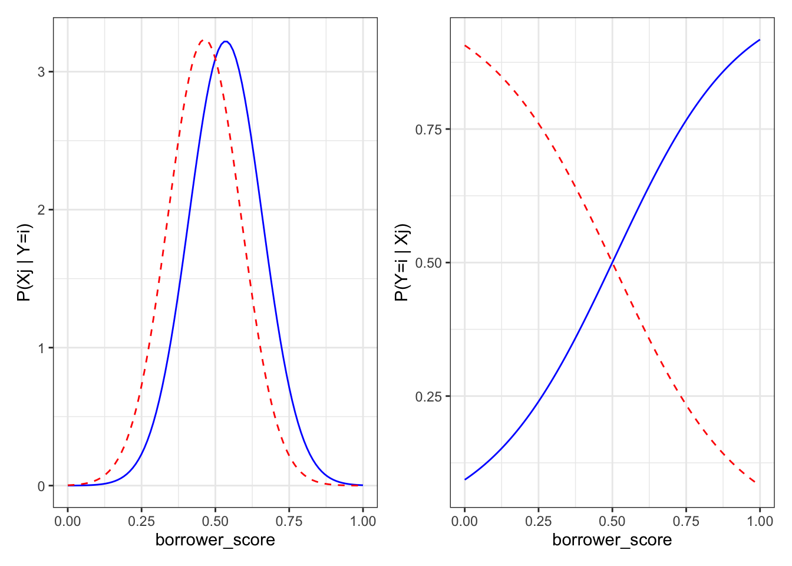
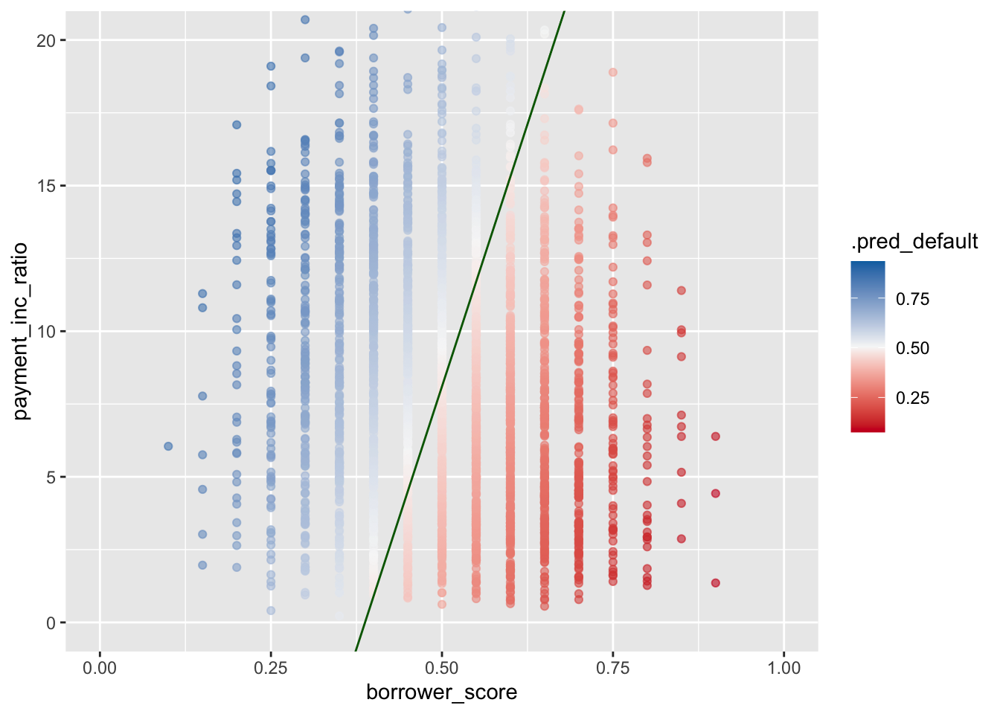
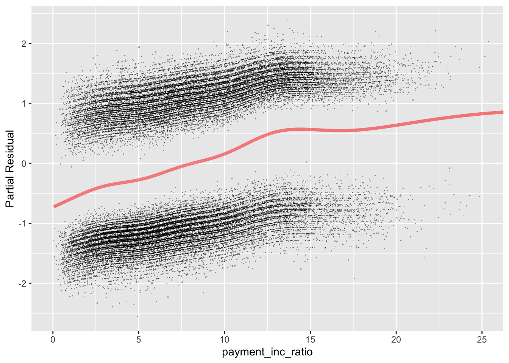
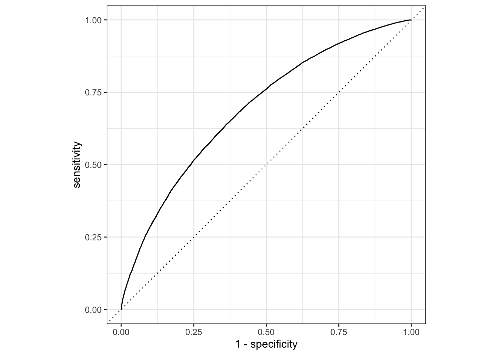
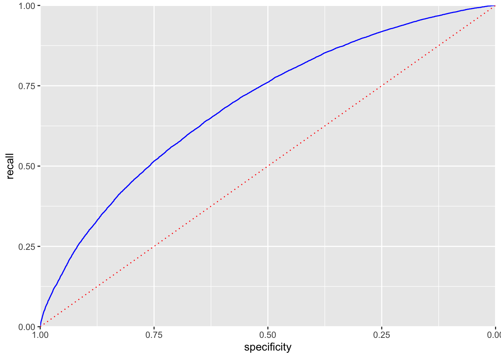
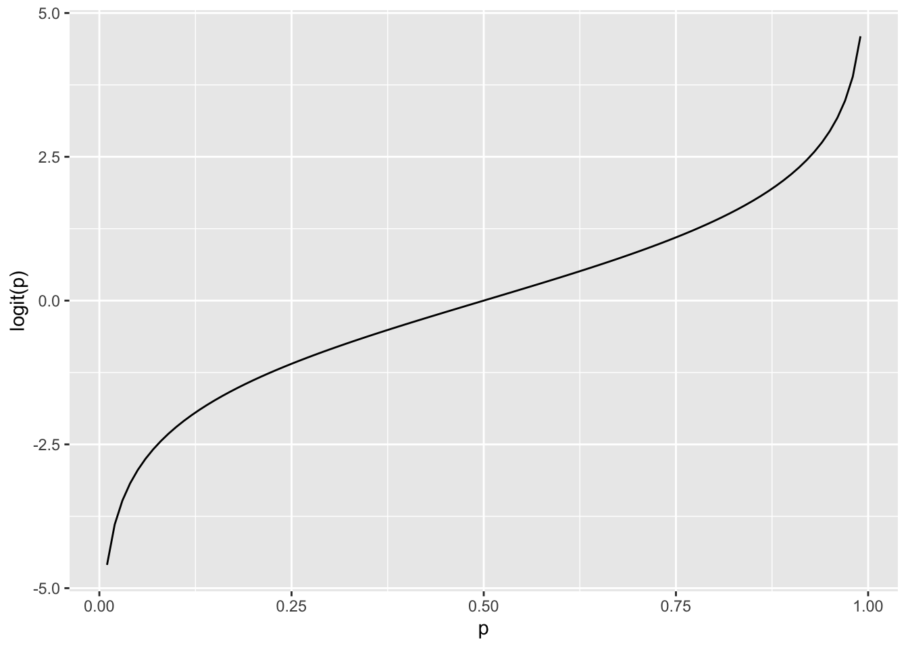
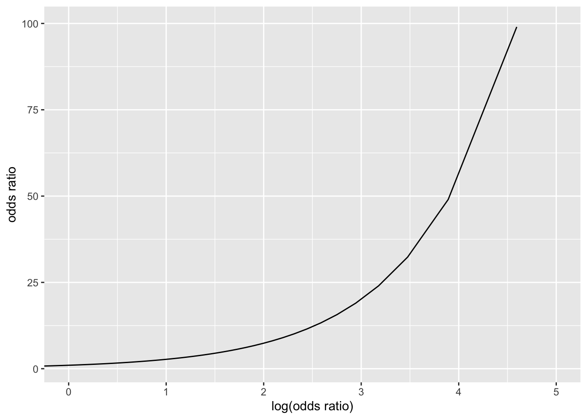
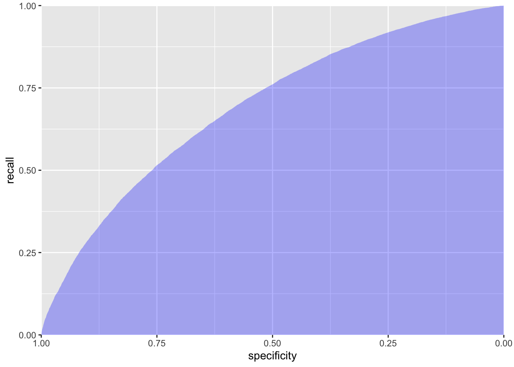
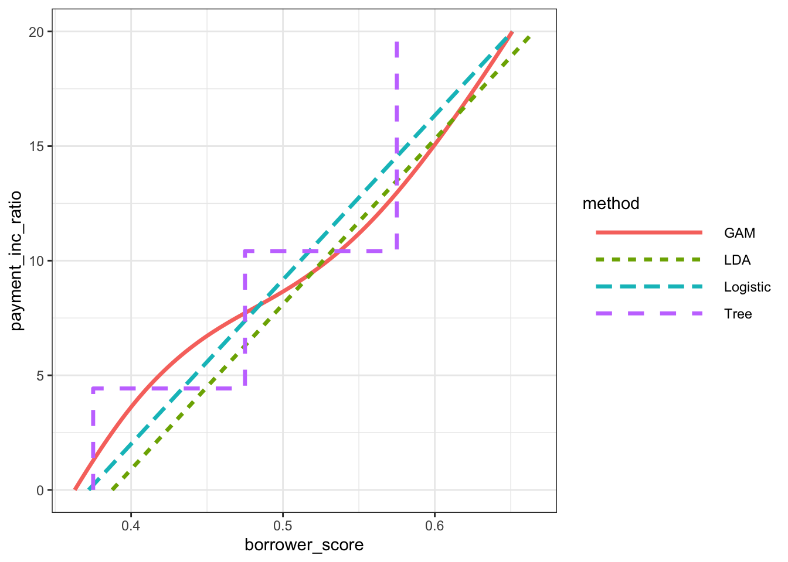

library(discrim)
library(ggpubr)
library(mgcv)
library(patchwork)
library(rpart)
library(tidymodels)
library(tidyverse)
set.seed(123)
# Location of the data files. Adjust this path if you keep the data
# files in a different directory.
DATA_DIR <- '../../data'Chapter 5: Classification
Classification
Naive Bayes
The Naive Solution
loan_data <- read_csv(file.path(DATA_DIR, "loan_data.csv.gz"), show_col_types = FALSE) %>%
dplyr::select(-c(index, status)) %>%
mutate(
across(where(is.character), as.factor),
outcome = factor(outcome, levels = c("paid off", "default")),
)
naive_model <- naive_Bayes() %>%
fit(outcome ~ purpose_ + home_ + emp_len_, loan_data)
naive_model %>%
extract_fit_engine() %>%
pluck("tables")$purpose_
var
grouping credit_card debt_consolidation home_improvement major_purchase
paid off 0.18759649 0.55215915 0.07150104 0.05359270
default 0.15151515 0.57571347 0.05981209 0.03727229
var
grouping medical other small_business
paid off 0.01424728 0.09990737 0.02099599
default 0.01433549 0.11561025 0.04574126
$home_
var
grouping MORTGAGE OWN RENT
paid off 0.4894800 0.0808963 0.4296237
default 0.4313440 0.0832782 0.4853778
$emp_len_
var
grouping < 1 Year > 1 Year
paid off 0.03105289 0.96894711
default 0.04728508 0.95271492new_loan <- loan_data[147, c("purpose_", "home_", "emp_len_")]
row.names(new_loan) <- NULL
new_loan# A tibble: 1 × 3
purpose_ home_ emp_len_
<fct> <fct> <fct>
1 small_business MORTGAGE > 1 Yearpredict(naive_model, new_loan)# A tibble: 1 × 1
.pred_class
<fct>
1 default predict(naive_model, new_loan, type = "prob")# A tibble: 1 × 2
`.pred_paid off` .pred_default
<dbl> <dbl>
1 0.346 0.654Numeric Predictor Variables
less_naive <- naive_Bayes() %>%
set_args(usekernel = FALSE) %>%
fit(outcome ~ borrower_score + payment_inc_ratio +
purpose_ + home_ + emp_len_, loan_data)
(naive_model %>%
extract_fit_engine() %>%
pluck("tables"))[1:2]$purpose_
var
grouping credit_card debt_consolidation home_improvement major_purchase
paid off 0.18759649 0.55215915 0.07150104 0.05359270
default 0.15151515 0.57571347 0.05981209 0.03727229
var
grouping medical other small_business
paid off 0.01424728 0.09990737 0.02099599
default 0.01433549 0.11561025 0.04574126
$home_
var
grouping MORTGAGE OWN RENT
paid off 0.4894800 0.0808963 0.4296237
default 0.4313440 0.0832782 0.4853778p_paid <- sum(loan_data$outcome == "default") / nrow(loan_data)
p_default <- sum(loan_data$outcome == "paid off") / nrow(loan_data)
p_bs_paid <- function(x, stats) dnorm(x, mean = stats[1, 1], sd = stats[1, 2])
p_bs_default <- function(x, stats) dnorm(x, mean = stats[2, 1], sd = stats[2, 2])
p_paid_bs <- function(x, stats) {
return(p_paid * p_bs_paid(x, stats) /
(p_paid * p_bs_paid(x, stats) + p_default * p_bs_default(x, stats)))
}
p_default_bs <- function(x, stats) {
return(p_default * p_bs_default(x, stats) /
(p_paid * p_bs_paid(x, stats) + p_default * p_bs_default(x, stats)))
}
stats <- less_naive %>%
extract_fit_engine() %>%
pluck("tables", "borrower_score")
g1 <- ggplot(data.frame(borrower_score = c(0, 1)), aes(x = borrower_score)) +
stat_function(fun = p_bs_paid, color = "blue", linetype = 1,
args = list(stats = stats)) +
stat_function(fun = p_bs_default, color = "red", linetype = 2,
args = list(stats = stats)) +
labs(y = "P(Xj | Y=i)") + theme_bw()
g2 <- ggplot(data.frame(borrower_score = c(0, 1)), aes(x = borrower_score)) +
stat_function(fun = p_paid_bs, color = "blue", linetype = 1,
args = list(stats = stats)) +
stat_function(fun = p_default_bs, color = "red", linetype = 2,
args = list(stats = stats)) +
labs(y = "P(Y=i | Xj)") + theme_bw()
g <- wrap_plots(g1, g2)
g
Discriminant Analysis
A Simple Example
loan3000 <- read_csv(file.path(DATA_DIR, "loan3000.csv"), show_col_types = FALSE) %>%
mutate(
outcome = factor(outcome, levels = c("paid off", "default")),
purpose_ = factor(purpose_)
)
loan_lda <- discrim_linear() %>%
fit(outcome ~ borrower_score + payment_inc_ratio, data = loan3000)
loan_lda %>%
extract_fit_engine() %>%
pluck("scaling") LD1
borrower_score -7.17583880
payment_inc_ratio 0.09967559lda_pred <- augment(loan_lda, new_data = loan3000)
head(lda_pred %>% select(.pred_class, .pred_default, `.pred_paid off`))# A tibble: 6 × 3
.pred_class .pred_default `.pred_paid off`
<fct> <dbl> <dbl>
1 default 0.554 0.446
2 default 0.559 0.441
3 paid off 0.273 0.727
4 default 0.506 0.494
5 default 0.610 0.390
6 paid off 0.411 0.589loan_fit_engine <- loan_lda %>% extract_fit_engine()
center <- 0.5 * (loan_fit_engine$mean[1, ] + loan_fit_engine$mean[2, ])
slope <- -loan_fit_engine$scaling[1] / loan_fit_engine$scaling[2]
intercept <- center[2] - center[1] * slope
ggplot(data = lda_pred,
aes(x = borrower_score, y = payment_inc_ratio, color = .pred_default)) +
geom_point(alpha = 0.6) +
scale_color_gradientn(colors = c("#ca0020", "#f7f7f7", "#0571b0")) +
coord_cartesian(xlim = c(0, 1), ylim = c(0, 20)) +
geom_abline(slope = slope, intercept = intercept, color = "darkgreen")
Logistic Regression
Logistic Regression and the GLM
logistic_model <- logistic_reg(mode = "classification") %>%
fit(outcome ~ payment_inc_ratio + purpose_ +
home_ + emp_len_ + borrower_score, loan_data)
logistic_modelparsnip model object
Call: stats::glm(formula = outcome ~ payment_inc_ratio + purpose_ +
home_ + emp_len_ + borrower_score, family = stats::binomial,
data = data)
Coefficients:
(Intercept) payment_inc_ratio
1.63809 0.07974
purpose_debt_consolidation purpose_home_improvement
0.24937 0.40774
purpose_major_purchase purpose_medical
0.22963 0.51048
purpose_other purpose_small_business
0.62066 1.21526
home_OWN home_RENT
0.04833 0.15732
emp_len_> 1 Year borrower_score
-0.35673 -4.61264
Degrees of Freedom: 45341 Total (i.e. Null); 45330 Residual
Null Deviance: 62860
Residual Deviance: 57510 AIC: 57540Predicted Values from Logistic Regression
pred <- predict(logistic_model, new_data = loan_data, type = "raw")
summary(pred) Min. 1st Qu. Median Mean 3rd Qu. Max.
-2.704774 -0.518825 -0.008539 0.002564 0.505061 3.509606 prob <- 1 / (1 + exp(-pred))
summary(prob) Min. 1st Qu. Median Mean 3rd Qu. Max.
0.06269 0.37313 0.49787 0.50000 0.62365 0.97096 prob <- predict(logistic_model, new_data = loan_data, type = "prob")
summary(prob$.pred_default) Min. 1st Qu. Median Mean 3rd Qu. Max.
0.06269 0.37313 0.49787 0.50000 0.62365 0.97096 Assessing the Model
logistic_model %>%
extract_fit_engine() %>%
summary()
Call:
stats::glm(formula = outcome ~ payment_inc_ratio + purpose_ +
home_ + emp_len_ + borrower_score, family = stats::binomial,
data = data)
Coefficients:
Estimate Std. Error z value Pr(>|z|)
(Intercept) 1.638092 0.073708 22.224 < 2e-16 ***
payment_inc_ratio 0.079737 0.002487 32.058 < 2e-16 ***
purpose_debt_consolidation 0.249373 0.027615 9.030 < 2e-16 ***
purpose_home_improvement 0.407743 0.046615 8.747 < 2e-16 ***
purpose_major_purchase 0.229628 0.053683 4.277 1.89e-05 ***
purpose_medical 0.510479 0.086780 5.882 4.04e-09 ***
purpose_other 0.620663 0.039436 15.738 < 2e-16 ***
purpose_small_business 1.215261 0.063320 19.192 < 2e-16 ***
home_OWN 0.048330 0.038036 1.271 0.204
home_RENT 0.157320 0.021203 7.420 1.17e-13 ***
emp_len_> 1 Year -0.356731 0.052622 -6.779 1.21e-11 ***
borrower_score -4.612638 0.083558 -55.203 < 2e-16 ***
---
Signif. codes: 0 '***' 0.001 '**' 0.01 '*' 0.05 '.' 0.1 ' ' 1
(Dispersion parameter for binomial family taken to be 1)
Null deviance: 62857 on 45341 degrees of freedom
Residual deviance: 57515 on 45330 degrees of freedom
AIC: 57539
Number of Fisher Scoring iterations: 4gam_formula <- outcome ~ s(payment_inc_ratio) + purpose_ +
home_ + emp_len_ + s(borrower_score)
logistic_gam <- gen_additive_mod(mode = "classification") %>%
fit(gam_formula, data = loan_data)Analysis of residuals
terms <- predict(logistic_gam %>% extract_fit_engine(), type = "terms")
partial_resid <- resid(logistic_gam %>% extract_fit_engine()) + terms
df <- data.frame(payment_inc_ratio = loan_data[, "payment_inc_ratio"],
terms = terms[, "s(payment_inc_ratio)"],
partial_resid = partial_resid[, "s(payment_inc_ratio)"])
ggplot(df, aes(x = payment_inc_ratio, y = partial_resid, solid = FALSE)) +
geom_point(shape = 46, alpha = 0.4) +
geom_line(aes(x = payment_inc_ratio, y = terms),
color = "red", alpha = 0.5, linewidth = 1.5) +
labs(y = "Partial Residual") +
coord_cartesian(xlim = c(0, 25))
Evaluating Classification Models
Confusion Matrix
predictions <- augment(logistic_gam, loan_data)
pred_y <- as.numeric(predictions$.pred_class == "default")
true_y <- as.numeric(predictions$outcome == "default")
true_pos <- (true_y == 1) & (pred_y == 1)
true_neg <- (true_y == 0) & (pred_y == 0)
false_pos <- (true_y == 0) & (pred_y == 1)
false_neg <- (true_y == 1) & (pred_y == 0)
conf_mat <- matrix(
c(sum(true_neg), sum(false_pos),
sum(false_neg), sum(true_pos)), 2, 2)
rownames(conf_mat) <- c("Yhat = 0", "Yhat = 1")
colnames(conf_mat) <- c("Y = 0", "Y = 1")
conf_mat Y = 0 Y = 1
Yhat = 0 14620 8378
Yhat = 1 8051 14293conf_mat(predictions, truth = outcome, estimate = .pred_class) Truth
Prediction paid off default
paid off 14620 8378
default 8051 14293Precision, Recall, and Specificity
bind_rows(
precision(predictions, truth = outcome, estimate = .pred_class),
recall(predictions, truth = outcome, estimate = .pred_class),
specificity(predictions, truth = outcome, estimate = .pred_class),
) %>% select(-.estimator)# A tibble: 3 × 2
.metric .estimate
<chr> <dbl>
1 precision 0.636
2 recall 0.645
3 specificity 0.630ROC Curve
roc_curve(predictions, outcome, .pred_default, event_level = "second") %>%
autoplot()
prob <- predict(logistic_gam, new_data = loan_data, type = "prob")
idx <- order(-prob$.pred_default)
recall <- cumsum(true_y[idx] == 1) / sum(true_y == 1)
specificity <- (sum(true_y == 0) - cumsum(true_y[idx] == 0)) / sum(true_y == 0)
roc_df <- data.frame(recall = recall, specificity = specificity)
ggplot(roc_df, aes(x = specificity, y = recall)) +
geom_line(color = "blue") +
scale_x_reverse(expand = c(0, 0)) +
scale_y_continuous(expand = c(0, 0)) +
geom_line(data = data.frame(x = (0:100) / 100), aes(x = x, y = 1 - x),
linetype = "dotted", color = "red")
AUC
sum(roc_df$recall[-1] * diff(1 - roc_df$specificity))[1] 0.6926232Strategies for Imbalanced Data
Undersampling
full_train_set <- read_csv(file.path(DATA_DIR, "full_train_set.csv.gz"), show_col_types = FALSE) %>%
mutate(
across(where(is.character), as.factor),
outcome = factor(outcome, levels = c("paid off", "default")),
)
mean(full_train_set$outcome == "default")[1] 0.1889455full_model <- logistic_reg(mode = "classification") %>%
fit(outcome ~ payment_inc_ratio + purpose_ +
home_ + emp_len_ + dti + revol_bal + revol_util,
full_train_set)
pred <- predict(full_model, new_data = full_train_set)
100 * mean(pred == "default")[1] 0.3942094Oversampling and Up/Down Weighting
full_train_set <- full_train_set %>%
mutate(
weight = ifelse(outcome == "default", 1 / mean(outcome == "default"), 1.0),
weight = importance_weights(weight))
weighted_model <- workflow() %>%
add_model(logistic_reg(mode = "classification")) %>%
add_case_weights(weight) %>%
add_formula(outcome ~ payment_inc_ratio + purpose_ +
home_ + emp_len_ + dti + revol_bal + revol_util) %>%
fit(full_train_set)Warning in eval(family$initialize): non-integer #successes in a binomial glm!pred <- predict(weighted_model, new_data = full_train_set)
100 * mean(pred == "default")[1] 57.67208Supplementary Material
Figure 5-2. Graph of the logit function that maps a probability to a scale suitable for a linear model
p <- seq(from = 0.01, to = 0.99, by = 0.01)
df <- tibble(
p = p,
logit = log(p / (1 - p)),
odds = p / (1 - p),
)
graph <- ggplot(data = df, aes(x = p, y = logit)) +
geom_line() +
labs(x = "p", y = "logit(p)")
graph
How to control the order of the classes in Python
Figure 5-3. The relationship between the odds ratio and the log-odds ratio
graph <- ggplot(data = df, aes(x = logit, y = odds)) +
geom_line() +
labs(x = "log(odds ratio)", y = "odds ratio") +
coord_cartesian(xlim = c(0, 5), ylim = c(1, 100))
graph
Figure 5-4. Partial residuals from logistic regression
Figure 5-7. Area under the ROC curve for the loan data
graph <- ggplot(roc_df, aes(specificity)) +
geom_ribbon(aes(ymin = 0, ymax = recall), fill = "blue", alpha = 0.3) +
scale_x_reverse(expand = c(0, 0)) +
scale_y_continuous(expand = c(0, 0)) +
labs(y = "recall") +
theme(plot.margin = unit(c(5.5, 10, 5.5, 5.5), "points"))
graph
SMOTE
Figure 5-8. Comparison of the classification rules for four different methods
loan_tree <- rpart(outcome ~ borrower_score + payment_inc_ratio,
data = loan3000, control = rpart.control(cp = 0.005))
loan_treen= 3000
node), split, n, loss, yval, (yprob)
* denotes terminal node
1) root 3000 1445 paid off (0.5183333 0.4816667)
2) borrower_score>=0.575 878 261 paid off (0.7027335 0.2972665) *
3) borrower_score< 0.575 2122 938 default (0.4420358 0.5579642)
6) borrower_score>=0.375 1639 802 default (0.4893228 0.5106772)
12) payment_inc_ratio< 10.42265 1157 547 paid off (0.5272256 0.4727744)
24) payment_inc_ratio< 4.42601 334 139 paid off (0.5838323 0.4161677) *
25) payment_inc_ratio>=4.42601 823 408 paid off (0.5042527 0.4957473)
50) borrower_score>=0.475 418 190 paid off (0.5454545 0.4545455) *
51) borrower_score< 0.475 405 187 default (0.4617284 0.5382716) *
13) payment_inc_ratio>=10.42265 482 192 default (0.3983402 0.6016598) *
7) borrower_score< 0.375 483 136 default (0.2815735 0.7184265) *lda_pred <- tibble(
borrower_score = c((0 - intercept) / slope, (20 - intercept) / slope),
payment_inc_ratio = c(0, 20),
method = "LDA",
)
tree_pred <- tibble(
borrower_score = c(0.375, 0.375, 0.475, 0.475, 0.575, 0.575),
payment_inc_ratio = c(0, 4.426, 4.426, 10.42, 10.42, 20),
method = "Tree",
)
glm0 <- glm(outcome ~ payment_inc_ratio + borrower_score,
data = loan3000, family = "binomial")
y <- seq(from = 0, to = 20, length = 100)
x <- (- glm0$coefficients[1] - glm0$coefficients[2] * y) / glm0$coefficients[3]
glm0_pred <- tibble(
borrower_score = x,
payment_inc_ratio = y,
method = "Logistic",
)
gam1 <- gam(outcome ~ s(payment_inc_ratio) + s(borrower_score),
data = loan3000, family = "binomial")
gam_fun <- function(x) {
newdata <- data.frame(borrower_score = x, payment_inc_ratio = y)
rss <- sum(predict(gam1, newdata = newdata)^2)
return(rss)
}
est_x <- nlminb(seq(from = 0.33, to = 0.73, length = 100), gam_fun)
gam1_pred <- tibble(
borrower_score = est_x$par,
payment_inc_ratio = y,
method = "GAM",
)
loan_fits <- bind_rows(
lda_pred,
tree_pred,
glm0_pred,
gam1_pred,
)graph <- ggplot(data = loan_fits, aes(x = borrower_score, y = payment_inc_ratio, color = method, linetype = method)) +
geom_line(linewidth = 1.2) +
theme_bw() +
theme(legend.key.width = unit(3, "cm")) +
guides(linetype = guide_legend(override.aes = list(size = 1)))
graph